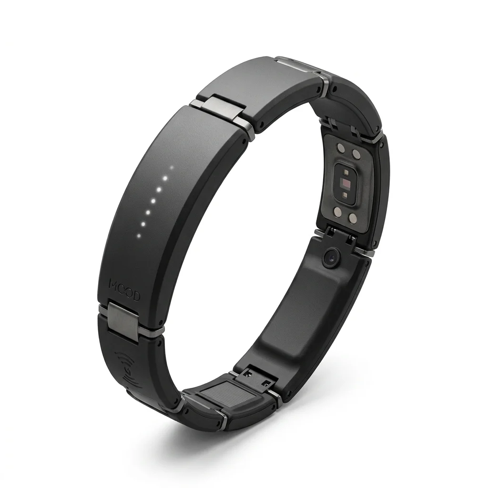

skap
nálada, stav mysli, kondice
To, co náramek sleduje.
Modulární náramek bez displeje
Náramek bez displeje a bez notifikací. Skládá se z článků, každý článek je modul a vy si vyberete, co bude měřit.

Spoj Senzor tepu NFC BaterieKoncept
Chytré hodinky dnes umí upozornit na nepravidelný srdeční rytmus a lidé takové funkce chtějí. Spolu s nimi ale dostanou na ruku displej a notifikace.
Skaplar si nechává měření a displej vynechává. Náramek je rozdělený na články, každý článek je modul a skládáte jen ty, které potřebujete. Platíte tak jen za to, co opravdu použijete.
Název
Spojení islandského kořene „skap“ a slova „modular“.
skap
nálada, stav mysli, kondice
To, co náramek sleduje.
að skapa
tvořit, tvarovat, skládat
Náramek si poskládáte sami.
Island
ticho bez displejů a notifikací
A odolnost vůči vodě a potu.
Konfigurátor
Základ je v každém náramku. Moduly mají tři velikosti, baterií můžete přidat i víc a náramek s každým článkem roste.
Spoj
Každý modul má na jedné straně kovový jazýček (samec) a na druhé drážku (samici). Jazýček se zasune do drážky sousedního modulu, zacvakne a funguje jako kloub, takže náramek kopíruje zápěstí.
Na jazýčku jsou 4 kontaktní plošky, v drážce 4 pružné kontakty. Po zacvaknutí na sebe dosednou a přes čep vedou dál i při ohnutí.
| + | napájení |
|---|---|
| − | zem |
| SDA | data, I²C |
| SCL | takt, I²C |
Přes sběrnici I²C základ pozná, jaký modul je připojený.
Vývoj
Základ se bude postupně vylepšovat, hlavně kvůli baterii. Starší moduly k němu budou dál pasovat.
Sledujeme, co chce komunita na Redditu, a nejžádanější modul vydáme jako další. V tomhle smyslu je Skaplar open source.